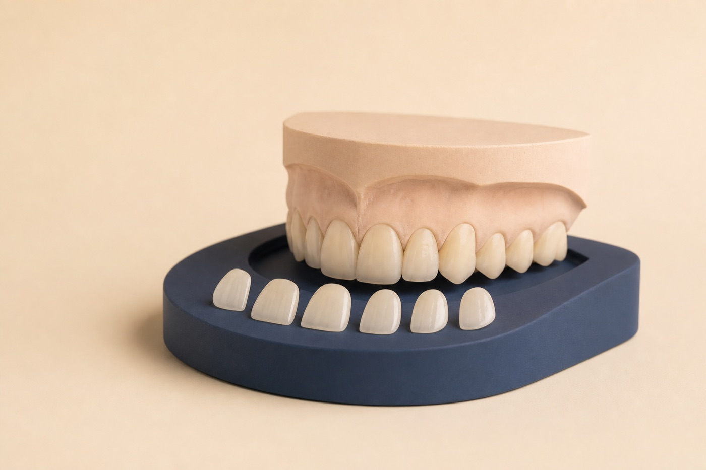

Discover
Discuss what you notice, what you like, and what should stay natural.
Porcelain veneers in Renton, WA
Porcelain veneers can adjust color, shape, proportion, spacing, and symmetry. Dr. Bhogal plans them in the context of your face, gums, bite, and natural teeth.

Your treatment path
A planned sequence gives you room to understand and shape the result.
Discuss what you notice, what you like, and what should stay natural.
Use photos, scans, and a planned tooth shape to guide treatment.
Conservatively prepare teeth as indicated and place provisionals.
Evaluate fit and appearance before bonding the final veneers.
Veneers are generally irreversible when enamel is prepared. They can chip, debond, wear, or require future replacement.
What veneers may change
Sometimes whitening, bonding, orthodontics, gum treatment, or no treatment is more conservative. Veneers are chosen only after those options are compared.
Adjust small, worn, chipped, or uneven teeth to create better balance.
Address discoloration that may not respond predictably to whitening.
Refine selected gaps or visual asymmetries when the bite allows.
Smile design
We assess the tooth display at rest and in motion, surface texture, translucency, gum levels, and how many teeth need treatment for a harmonious transition.
Veneers FAQ
Veneers are thin custom porcelain restorations bonded to the front of selected teeth to change shape, color, proportion, or symmetry.
Many require some enamel preparation. The amount depends on tooth position, color, shape, and the planned result.
Longevity varies with bite, habits, oral health, material, design, and maintenance. Veneers may eventually need repair or replacement.
Often whitening is considered first because porcelain color will not change later. The sequence depends on the overall smile plan.
Bring your goals. We will help you compare veneers with more conservative options.